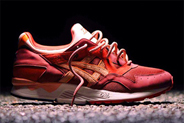

In this instant classic with ronnie fieg the gel lyte v recieves inspiration from the ancient volcanos of the hawaiian islands. Primarily red suede covered this shoe with subtle hits of pink on the rear of the midsole as well as the rope laces. Only 200 pairs of these were released at KITH nyc on february 12 2014.